Parámetros de solicitudes por producto
Mediante esta opción se parametriza para cada uno de los productos débito definidos por la entidad los tipos de solicitud que es permitido efectuar, las etapas por las cuales debe pasar la solicitud y los documentos que son exigibles al cliente en cada etapa.
Al ingresar a la opción se despliega un formulario inicial que contiene una lista de valores en la cual el usuasrio selecciona el producto para el cual se requiere parametrizar los tipos de solicitud.
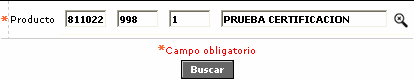
Una vez seleccionado el producto, se despliega un nuevo formulario que contiene los tipos de solicitud parametrizados actualmente para ese producto o en blanco si no existen aún parámetros para el mismo mostrando para cada una de ellas el tipo solicitud y el nombre o descripción.
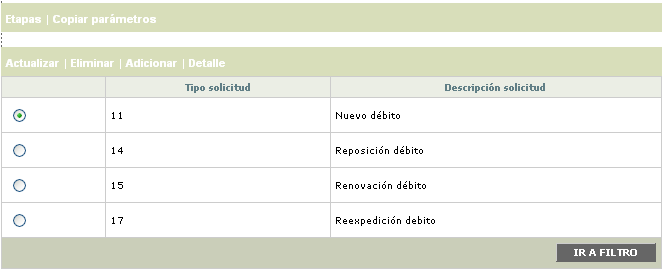
El formulario posee los hipervínculos Etapas que permite asociar a cada tipo de solicitud las etapas por las que debe pasar y Copiar parámetros que permite replicar los parámetros definidos para un producto a otro diferente. Adicionalmente contiene los enlaces:Actualizar, Eliminar, Adicionar y Detalle.
Adicionar: Al activar ese enlace, se despliega un nuevo formulario con los siguientes campos.
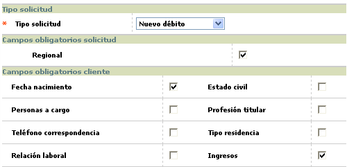
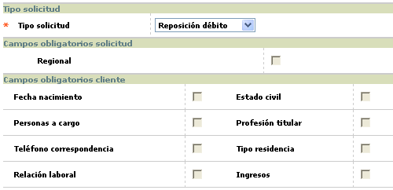
Descripción de campos
Tipo solicitud |
Campo obligatorio tipo combo en el que se selecciona entre Nuevo débito, Reposición débito, Reexpedición débito o Renovación débito el tipo de solicitud que se desea adicionar al producto. |
|
Regional |
Este campo se habilita únicamente cuando el tipo de solicitud corresponda a Nuevo débito y se marca para indicar si durante el proceso de ingreso de la solicitud la sucursal de radicación registrada en el formulario debe corresponder a una regional o depender de alguna regional. |
Fecha nacimiento / Estado civil / Personas a cargo / Profesión titular / Teléfono correspondencia / Tipo residencia / Relación laboral / Ingresos |
Conjunto de campos que se habilitan únicamente para el tipo de solicitud nuevo débito y en los cuales se marca respectivamente para indicar si el dato es requerido para permitir el ingreso de la solicitud. Cuando al ingresar la solicitud el sistema detecta que el cliente no posee la información correspondiente para alguno de los campos marcados como obligatorio, no permite continuar con el proceso hasta tanto no se le adicionen al cliente todos los datos requeridos. |
Actualizar: si el usuario selecciona un registro correspondiente a Tipo solicitud 'Nuevo débito' e invoca la opción Actualizar, se despliega un formulario en el cual el único campo no modificable es Tipo solicitud. Si el tipo solicitud del registro seleccionado para actualizar es diferente a Nuevo débito, ninguno de los campos desplegados en el formulario se puede modificar.
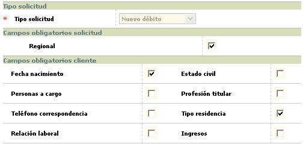
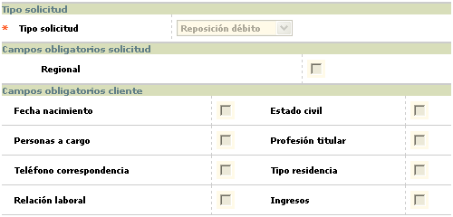
Detalle: si el usuario selecciona un registro e invoca la opción Detalle, se despliega un formulario con la información completa del registro y en el cual ninguno de sus campos es modificable.
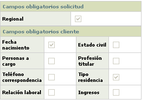
Etapas: si el usuario selecciona un tipo de solicitud e invoca el hipervínculo Etapas, se despliega un formulario en el que se muestran las etapas por las cuales la entidad haya definido que debe pasar cada tipo de solicitud.
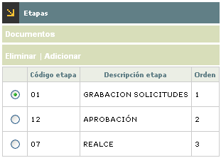
El formulario contiene además de las opciones Eliminar y Adicionar, un hipervínculo a través del cual se asocian a cada etapa los documentos exigibles al cliente.
Adicionar: Al activar ese enlace, se despliega un wizard de dos pasos en el cual se ingresan las diferentes etapas asociadas con el producto y tipo de solicitud y se les asigna el orden secuencial en el cual se deben avanzar.
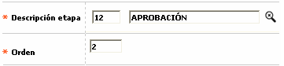
Descripción de campos
Descripción etapa |
Campo obligatorio con lista de valores que permite seleccionar la etapa que se desea asociar al tipo de solicitud. |
Orden |
En este campo numérico de hasta 2 dígitos, obligatorio, se registra el orden en el que debe ir la etapa que se está asociando al tipo de solicitud. |
Después de haber ingresado los datos de cada etapa, mediante el segundo botón del wizard se van adicionando una a una y luego al desplazarse a la segunda página se muestra el resumen de todas desplegando para cada una el código de la etapa, la descripción y el orden. El formulario cuenta con un check que permite marcar aquellas etapas que no se desea adicionar.
Es importante para el usuario tener en cuenta, que en este proceso inicial de adición el sistema requiere que las etapas sean ingresadas de manera que tengan un orden estrictamente secuencial, puesto que de lo contrario no se permitirá guardar los registros en la base de datos.
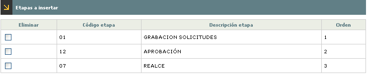
Documentos: si el usuario selecciona una etapa definida para un tipo de solicitud e invoca el hipervínculo Documentos, se despliega un nuevo formulario en el que se muestran los documentos que la entidad solicita al cliente para poder procesar su solicitud.
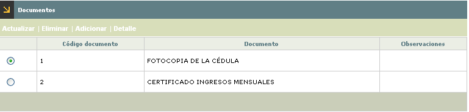
El formulario contiene los enlaces: Actualizar, Eliminar, Adicionar y Detalle.
Adicionar: Al activar ese enlace, se despliega un nuevo formulario con los siguientes campos.
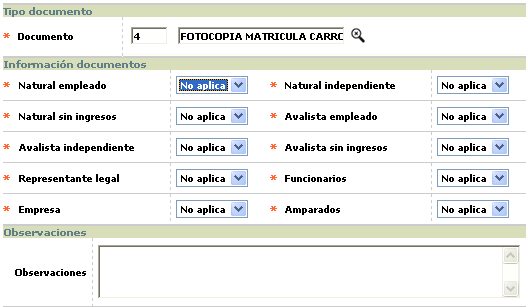
Descripción de campos
Documento |
Campo obligatorio con lista de valores que permite seleccionar el documento que se desea exigir al cliente en la etapa actual. |
Natural empleado / Natural independiente / Natural sin ingresos / Representante legal / Funcionarios / Empresa |
En este campo tipo combo se selecciona para cada una de las personas entre Opcional y No aplica para indicar si el documento debe ser entregado como requisito para el procesamiento de la solicitud, queda a decisión de la entidad o si dicho documento no tiene ninguna implicación para el tipo de solicitud. |
Observaciones |
Campo alfanumérico que permite registrar información adicional o aclaratoria en relación con cada uno de los documentos exigidos. |
Actualizar: si el usuario selecciona un registro e invoca la opción Actualizar, se despliega un formulario en el cual el único campo NO modificable es Documento.
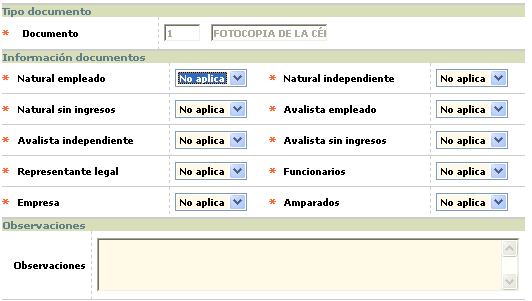
Detalle: si el usuario selecciona un registro e invoca la opción Detalle, se despliega un formulario con la información completa del registro y en el cual ninguno de sus campos es modificable.
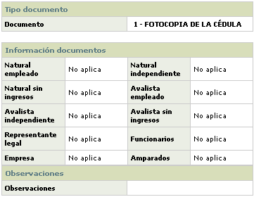
Copiar parámetros: si el usuario selecciona un tipo de solicitud e invoca el hipervínculo Copiar parámetros, se despliega un nuevo formulario que le permite replicar los parámetros del producto actual a otro producto diferente, agilizando el proceso de parametrización.
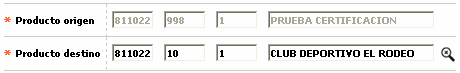
Descripción de campos
Producto origen |
Campo de salida que muestra el producto actual seleccionado por el usuario y que contiene los parámetros que se desea copiar o replicar. |
Producto destino |
En este campo obligatorio con lista de valores, se selecciona el producto débito para el cual se desea copiar o replicar los parámetros actuales del producto de origen. |